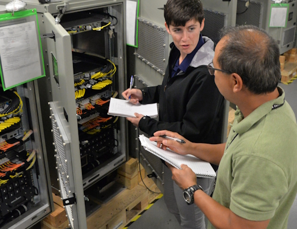
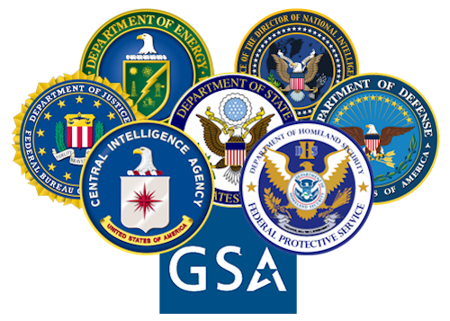

Okay, I have some pretty hefty career goals, so I'm going to divide this up into three intervals: short, medium, and long term goals.
For some of my short term goals, I plan on just getting myself established in the workforce and working towards my certifications and maybe even a bachelor's degree. I'll list some of my goals out below:
Ontop of the certifications listed, I would like to get a stable entry level job at a good organization where I can move up consistently.
Additionally, I'd like to continue my education like I mentioned at Bellevue University through tuition reimbursement at a future job if possible.
Onto medium terms goals. Nothing too crazy for these. Ideally I'd like to be in a mid level position at this point, either a systems admin, junior systems admin, or an analyst role. The expectation is that I would have a good amount of experience that would open up multiple new opportunities, which I'll get to in the next section.
Outside of career, I'd also like to try and finance a house at this point (although the market ain't looking too good).
This is where the fun and interesting stuff comes into play. Ideally at this point I'd be pretty well established in my career, have a good chunk of certificates, and maybe a bachelor's degree.
This far into my career, I'd like to get into government work. I'd like to get my government security clearance and try to join one of the "alphabet agencies": CIA, FBI, NSA, etc. There is a TON of money to be made there, and I'd be pretty much set from then on out if I can achieve it.
